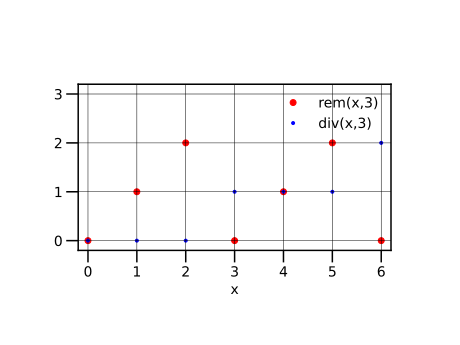
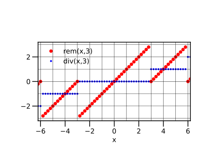
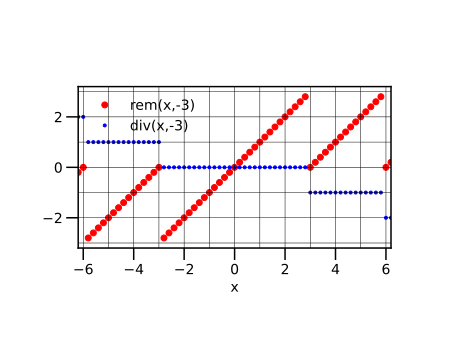
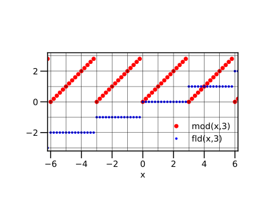
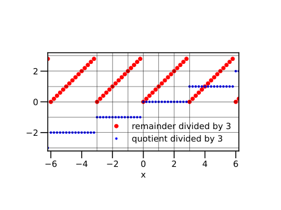
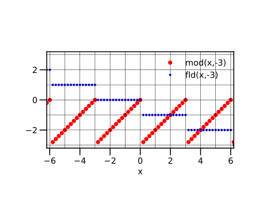
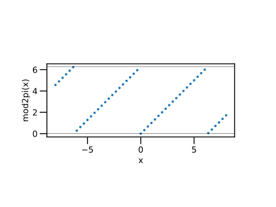

第6回：■ 整数
■ 型
型（type）：データの種類のこと
- 整数型
Int64 - 浮動小数点型
Float64
julia> typeof(1)Int64julia> typeof(1.0)Float64
- 論理型
Bool
julia> typeof(true)Booljulia> typeof(false)Bool
- Primitive Types 基本型
- Composite Types 複合型，構成型
■ 整数
既定の整数型は，Int64 であり， $64$ 桁（64bit, binary digit）の2進数である．
負の数 $-n$ を $2^{64}-n$ で表す「2の補数」方式を用いて， 正負の数を表す「符号付整数」である．
Int64 で表される最大の数は $2^{63}-1$ である． また，最小の数（絶対値が最大な負の数)は $-2^{63}$ である． これらの値は， 関数 typemax(Int64),typemin(Int64) で，それぞれ求められる．
julia> 2^63 - 19223372036854775807julia> typemax(Int64)9223372036854775807julia> typemin(Int64)-9223372036854775808
2の補数を求める方法が知られていれば， 減算は，引く数の「2の補数」を求め，加算すればよい． 実は，2の補数は簡単に求められる．
2の補数では，2進数の最上位の桁が，符号に相当する． すなわち，負の数では， 最上位の桁（Most-Significant Bit, MSB）は 1 , 正の数または $0$ では，MSBは 0 になる．
■ 整数どうしの加減乗算
整数どうしの加減算は，2の補数として行われる． typemin(Int64) から typemin(Int64) までの範囲を超えても，例外は発生しない．
julia> typemax(Int64) + 1-9223372036854775808julia> typemax(Int64) + 2-9223372036854775807julia> typemin(Int64) - 19223372036854775807julia> typemin(Int64) - 29223372036854775806julia> typemax(Int64) + typemax(Int64)-2julia> typemax(Int64) * 2-2julia> typemax(Int64) * 4-4
●▼ 整数の2進数による表現．
関数 bitstring(x) は，数 x の2進数表現を文字列として返す．
julia> bitstring(0)"0000000000000000000000000000000000000000000000000000000000000000"julia> bitstring(1)"0000000000000000000000000000000000000000000000000000000000000001"julia> bitstring(2)"0000000000000000000000000000000000000000000000000000000000000010"julia> bitstring(-1)"1111111111111111111111111111111111111111111111111111111111111111"julia> bitstring(-2)"1111111111111111111111111111111111111111111111111111111111111110"julia> bitstring(typemax(Int64))"0111111111111111111111111111111111111111111111111111111111111111"julia> bitstring(typemin(Int64))"1000000000000000000000000000000000000000000000000000000000000000"
上の例で，以下の理由を説明できただろうか？
typemax(Int64)+1 == typemin(Int64)
typemax(Int64)+typemax(Int64) == -2
typemax(Int64)*2 == -2
2進数に $2$ を乗じることは，左に一つ分ずらすこと（左シフト 1bit）と同じである．
■ 整数どうしの除算
整数どうしの割り算（除算）の結果（商 quotient）は，小数（浮動小数点数）になる．
julia> 1 / 20.5
余り（剰余）を求めたい場合は，■ 残余 rem と整商 div を参照せよ．
■ 整数と浮動小数点数との四則演算
整数と小数を四則演算すると，小数になる．
julia> 1 + 23julia> 1 + 2.03.0julia> 1 * 22julia> 1 * 2.02.0
■ 浮動小数点数から整数への変換
浮動小数点数を整数に変換するには，Int64(x) を用いる． ただし，$x$ が小数部を含むと例外がでる（エラーとなる）ので， 小数部を $0$ に変換する必要がある．
この際，床関数が用いられる． 参考→ ■ 床関数・天井関数
julia> Int64(1.0)1julia> Int64(1.1) # エラーERROR: InexactError: Int64(1.1)julia> Int64(floor(1.1))1
■ 残余 rem と整商 div
正の整数 $x > 0$ を，正の整数 $d > 0$ で割った結果， 整数の商 $q$ と余り $r$ が得られたとき，
\[x=qd+r\]
が成り立つ．
割られる数 $x$ を「被除数（dividend）」，割る数 $d$ を「除数（divisor）」という．
整数の商 $q$ を，「整商（integral quotient）」， 余り $r$ を「残余（remainder）」という． 残余は，$d$ を超えない，すなわち，
\[0 \le r \lt d\]
である．
関数 rem(x,d) は，$x$ を $d$ で割ったときの残余を返す． 関数 rem の代わりに，% 演算子を用いて x % d と書いてもよい．
julia> rem(15, 4)3julia> 15 % 43
関数 div(x,d) は，$x$ を $d$ で割ったときの整商を返す．
julia> div(15, 4)3
整数 $0$ から $7$ までを，$3$ で割った整商と残余（ div と rem の計算結果）を描く．
using PyPlot
plt.axes().set_aspect("equal")
xs = 0:7
d = 3
plt.plot(xs, rem.(xs, d), "ro", label = "rem(x," * string(d) * ")")
plt.plot(xs, div.(xs, d), "b.", label = "div(x," * string(d) * ")")
plt.xlim(-0.2, 6.2)
plt.ylim(-0.2, 3.2)
plt.xlabel("x")
plt.legend()
for x = 0:7
plt.axvline(x, color = "k", lw = 0.5)
end
for y = 0:3
plt.axhline(y, color = "k", lw = 0.5)
end
▲ 練習：硬貨への分割
日本では，小額の取引に，
- 500円
- 100円
- 50円
- 10円
- 5円
- 1円
の6種類の硬貨がよく用いられる．
金額が与えられたときに，6種類の硬貨が各々何枚必要か計算せよ． ただし，高額の硬貨を優先して用いるものとする．
- 第一段階として，100円，10円，1円に分けるプログラムを書いて実行せよ．
- 第二段階として，上の 6種類の硬貨に分けるプログラムを書いて実行せよ．同様な処理は，繰り返し（
for文）を用いてみよ． - 第三段階として，1円刻みで551円までの金額に対して，6種類の硬貨の枚数を描くプログラムを書いて実行せよ．
▼ ユークリッドの互除法
2 つの自然数 $a$, $b$（ただし，$a \ge b$ とする）について， $a$ の $b$ による残余を $r$ とすると， $a$ と $b$ との最大公約数（greatest common divisor, gcd）は $b$ と $r$ との最大公約数に等しいという性質が成り立つ． この性質を利用して，$b$ を $r$ で割った残余を求め， 除数 $r$ をその剰余で割った残余を求め， という計算を逐次繰り返し， 残余が $0$ になった時の除数が $a$ と $b$ との最大公約数となる．
以下のプログラムで，変数 t は b の値を一時保存するための役目をする． このような変数を，「一時変数（temporary variable）」と呼ぶ．
julia> a = 10711071julia> b = 10291029julia> @show a, b(a, b) = (1071, 1029) (1071, 1029)julia> while b != 0 global a, b t = b b = rem(a, b) a = t @show a, b end(a, b) = (1029, 42) (a, b) = (42, 21) (a, b) = (21, 0)julia> println("gcd=" * string(a))gcd=21julia> # 公約数の確認 @show rem(1071, a);rem(1071, a) = 0julia> @show rem(1029, a);rem(1029, a) = 0
3355と2379の最大公約数を求めてみよう．
julia> a = 33553355julia> b = 23792379julia> @show a, b(a, b) = (3355, 2379) (3355, 2379)julia> while b != 0 global a, b t = b b = rem(a, b) a = t @show a, b end(a, b) = (2379, 976) (a, b) = (976, 427) (a, b) = (427, 122) (a, b) = (122, 61) (a, b) = (61, 0)julia> println("gcd=" * string(a))gcd=61julia> # 公約数の確認 @show rem(3355, a);rem(3355, a) = 0julia> @show rem(2379, a);rem(2379, a) = 0
■ 一般の残余 rem と整商 div
正の整数 $x > 0$ を 正の整数 $d > 0$ で割ったときの 「商」 $q$ と「余り」 $r$ の関係
\[x = qd + r\]
は， 被除数 $x$ や除数 $d$ が，小数や負の数の場合に拡張できる． ここで，「商」$q$ は整数であり， 「余り」$r$ の絶対値は，除数 $d$ の絶対値を超えないものとする．
\[0 \le \left\vert{r}\right\vert \lt \left\vert{d}\right\vert\]
さて，被除数 $x$ や除数 $d$ が負の数の場合， 「商」$q$ と「余り」 $r$ の取るべき値について，いくつかの考え方がある．
残余 rem(x,d) とは，「被除数 $x$ と同じ符号の余り」である． すなわち，被除数 $x$ が負なら，残余 $r$ は
\[-|d| \lt r \le 0\]
の範囲になる． 対応する「商」は 整商 div(x,d) で求められる．
以下では，$-6$ から $6$ までの数（被除数）を，$3$ （正の除数）で割ったときの 残余と整商を描く． 被除数が負のとき，$−3 \lt r \le 0$ となることを観察せよ．
using PyPlot
plt.axes().set_aspect("equal")
xs = -6.8:0.2:6.8
d = 3
plt.plot(xs, rem.(xs, d), "ro", label = "rem(x," * string(d) * ")")
plt.plot(xs, div.(xs, d), "b.", label = "div(x," * string(d) * ")")
plt.xlim(-6.2, 6.2)
plt.ylim(-3.2, 3.2)
plt.xlabel("x")
plt.legend()
for x = -7:7
plt.axvline(x, color = "k", lw = 0.5)
end
for y = -3:3
plt.axhline(y, color = "k", lw = 0.5)
end
今度は，被除数の範囲は変えずに，$-3$（負の除数）で割ったときの残余と整商を描く．
using PyPlot
plt.axes().set_aspect("equal")
xs = -6.8:0.2:6.8
d = -3
plt.plot(xs, rem.(xs, d), "ro", label = "rem(x," * string(d) * ")")
plt.plot(xs, div.(xs, d), "b.", label = "div(x," * string(d) * ")")
plt.xlim(-6.2, 6.2)
plt.ylim(-3.2, 3.2)
plt.xlabel("x")
plt.legend()
for x = -7:7
plt.axvline(x, color = "k", lw = 0.5)
end
for y = -3:3
plt.axhline(y, color = "k", lw = 0.5)
end
上の二つのグラフを比較すると， 残余 rem(x,3) と rem(x,-3) が一致することが観察される．また， 整商 div(x,3) と div(x,-3) は，互いに符号が逆である．
▲ 練習：切り捨て
正の数 x を
- $0.1$ の位（小数第1位）で（すなわち，小数点以下を切り捨て）
- $0.01$ の位（小数第2位）で
- $1$ の位で
- $10$ の位で
- 一般に $10^{n}$ の位で
切り捨てるプログラムを書け．
作成したプログラムの動作を確かめるための数を選び，実行結果を示せ． さらに，切り捨てる前後の数の関係を分かりやすくプロットしてみよ．
▲ 練習：四捨五入
正の数 x を
- $0.1$ の位（小数第1位）で（すなわち，小数点以下を四捨五入）
- $0.01$ の位（小数第2位）で
- $1$ の位で
- $10$ の位で
- 一般に $10^{n}$ の位で
四捨五入するプログラムを書け．
作成したプログラムの動作を確かめるための数を選び，実行結果を示せ． さらに，四捨五入する前後の数の関係を分かりやすくプロットしてみよ．
■ 剰余 mod と，商の床 fld
「商」 $q$ と「余り」 $r$ の一般の関係
\[\begin{gathered} x=qd+r, \\ 0 \le \left\vert{r}\right\vert \lt \left\vert{d}\right\vert \end{gathered}\]
について，別の考え方を示す．
剰余（modulo）は， 「除数 $d$ と同じ符号の余り」$r$ である． 剰余関数 mod(x,d) は，この「余り」$r$を返す． 対応する「商」$q$ は，関数 fld(x,d) で求められる．
- 被除数が非負 $x \ge 0$，かつ，除数が正 $d \gt 0$ なら，残余
remと剰余modは一致する． - 被除数が負 $x < 0$ の場合も，剰余は非負である．
被除数と除数の両方とも正なら，残余 rem と剰余 mod は一致する．この場合，残余 rem の方が，少し計算コストが小さく，好まれる．
では，$-6$ から $6$ までの数（被除数）を，$3$（正の除数）で割ったときの剰余と「商」を描こう．
using PyPlot
plt.axes().set_aspect("equal")
xs = -6.8:0.2:6.8
d = 3
plt.plot(xs, mod.(xs, d), "ro", label = "mod(x," * string(d) * ")")
plt.plot(xs, fld.(xs, d), "b.", label = "fld(x," * string(d) * ")")
plt.xlim(-6.2, 6.2)
plt.ylim(-3.2, 3.2)
plt.xlabel("x")
plt.legend()
for x = -7:7
plt.axvline(x, color = "k", lw = 0.5)
end
for y = -3:3
plt.axhline(y, color = "k", lw = 0.5)
end
実は，関数 fld(x,d) は，floor(x/d) と同じ値であり，「商の床」 floored division ともいう． すなわち，$\dfrac{x}{d}$ 以下の最大の整数である． 参照： ■ 床関数・天井関数
上の例で，「商の床」を描く． 関数 fld と同じ結果が得られることが観測できる．
using PyPlot
plt.axes().set_aspect("equal")
xs = -6.8:0.2:6.8
d = 3
qs = floor.(xs / d)
rs = xs - qs * d
plt.plot(xs, rs, "ro", label = "remainder divided by " * string(d))
plt.plot(xs, qs, "b.", label = "quotient divided by " * string(d))
plt.xlim(-6.2, 6.2)
plt.ylim(-3.2, 3.2)
plt.xlabel("x")
plt.legend()
for y = -3:3
plt.axvline(y, color = "k", lw = 0.5)
end
for x = -7:7
plt.axhline(x, color = "k", lw = 0.5)
end
今度は，被除数の範囲は変えずに，$-3$ （負の除数）で割ったときの剰余と「商」を描こう．
using PyPlot
plt.axes().set_aspect("equal")
xs = -6.8:0.2:6.8
d = -3
plt.plot(xs, mod.(xs, d), "ro", label = "mod(x," * string(d) * ")")
plt.plot(xs, fld.(xs, d), "b.", label = "fld(x," * string(d) * ")")
plt.xlim(-6.2, 6.2)
plt.ylim(-3.2, 3.2)
plt.xlabel("x")
plt.legend()
for x = -7:7
plt.axvline(x, color = "k", lw = 0.5)
end
for y = -3:3
plt.axhline(y, color = "k", lw = 0.5)
end
負の数 $-3$ で割ったとき，剰余 $r$ の範囲は $-3 \lt r \le 0$ であることが観察できる．
◀ 練習：「商の床」
上の例で，「商の床」 floor( x/-3 ) を描け． 関数 fld(x,-3) と結果が等しいことを確認せよ．
▶ 2piで割った剰余
関数 mod2pi(x) は，mod(x,2*pi) と同じである． すなわち，$x$ を $2\pi$ で割った剰余を返す．
using PyPlot
plt.axes().set_aspect("equal")
is = -24:24
xs = is / 3
plt.plot(xs, mod2pi.(xs), ".")
plt.xlabel("x")
plt.ylabel("mod2pi(x)")
plt.axhline(0, color = "k", lw = 0.5)
plt.axhline(2 * pi, color = "k", lw = 0.5)
■ 整数 0による除算
除数が $0$ であっても，「余り」を計算しない除算では， 例外は発生しない．→ ■ 0による除算
しかし，「余り」を計算する rem , mod , div , mod などにおいて， 除数が 0 であると例外（exception）を発生する． 例外が発生すると，プログラムの実行は，そこで中断する．
除算例外 Division errors (section)
julia> div(3, 0)ERROR: DivideError: integer division errorjulia> rem(3, 0)ERROR: DivideError: integer division error
例外が発生した場合，それを救済する手続きを書いて，プログラムを続行することもできる．だが，この文書の範囲を超えるので，説明しない． → Exception Handling
▶ 床関数・天井関数の型を整数型にする
■ 床関数・天井関数 floor(x) および ceil の結果の型は， 引数（ひきすう） x の型に一致する．
julia> floor(2) # => 整数2julia> floor(0.2) # => 小数（浮動小数点数)0.0julia> ceil(2) # => 整数2julia> ceil(0.2) # => 小数（浮動小数点数)1.0
結果の型を整数にするには，引数 x の前に，型の名前 Int64 をつける．
julia> floor(Int64, 2)2julia> floor(Int64, 0.2)0julia> ceil(Int64, 2)2julia> ceil(Int64, 0.2)1
★ 今回のまとめ
- 型
- 整数
- 整数どうしの加減乗算
- 整数どうしの除算
- 整数と浮動小数点数との四則演算
- 浮動小数点数から整数への変換
- 残余
remと整商div - ユークリッドの互除法
- 切り捨て，四捨五入（練習）
- 剰余
modと商の床fld - 整数 0 による除算：例外